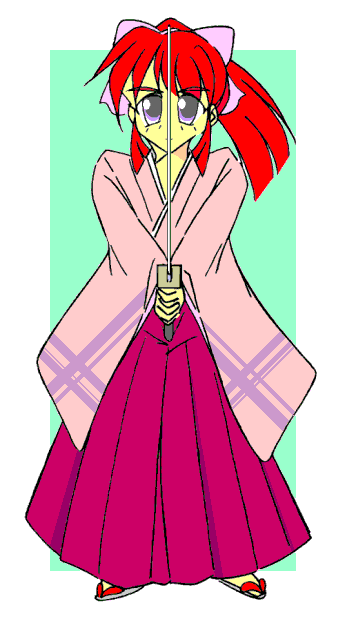

戻る
（前回のあらすじ）
指輪を取り戻すために『虎の爪』の本拠、「生田生体研究所」に潜入した光雄とシャドウガール。だが、そこで待ち受けていたのは、指輪の力でスウィートハニィに変身したパンツァーレディとの戦いだった。
シャドウガールの機転でかろうじて窮地を脱した二人は、研究所の地下室で『虎の爪』の首領『シスター』と、彼女に幽閉された男に遭遇する。
そこに飛び込んできた、ハニィに変身したパンツァーレディ。
だが、彼女を見るなり、幽閉された男は鉄格子に取り付いて叫び出した。
「蜜樹っ、蜜樹っ！ 蜜樹〜っ！！」
戦え！スウィートハニィ
第８話「父と娘と」
作：ｔｏｓｈｉ９
「蜜樹っ、蜜樹っ！ 無事だったのか！？ 私だ！ 私がわからないのか！？」
鉄格子をがたがたと揺らして、男が叫び続ける。
「……ちっ！ いかんっ、パンツァーレディ、早くここから去れ」
「はっ、しかしこのままこの二人をシスターの……ぐっ！ ぐぅぅ……っ」
次の瞬間、ハニィの姿をしたパンツァーレディは、突然胸を押さえて苦しみ始めた。
「ぐぐっ、や、やめろぉ……いやっ……お……お…と……ぐ、ぐあぁ……」
苦しみもがくパンツァーレディは、まるで何かから逃れるように、自分の指から指輪を外すと、床に放り出した。
途端にハニィの姿から、本来の彼女の姿に戻ってしまう。だが、彼女は尚も苦しみ続けていた。
胸をかきむしるその手が服を破き、胸元の傷跡をまさぐる。
「いや……お……とう……さ……たすけ……ぎ、ぐぐっ……ちが……う……あたしは……パンツァー……レディ……」
放り出された指輪が、カラカラと光雄の前に転がってくる。
「しめた！」
素早く指輪を拾い上げる光雄。そしてその小さな指に指輪をすばやく差し込むと、胸に当てて叫んだ。
『みつお・フラァッッシュ！』
光雄の小さな体が光に包まれた。
ずたずたのドレスも、その下に履かされた幼女用の下着も粉々に飛び散り、一瞬何も身につけていない裸の状態になってしまう。
そして光雄の体は、幼い少女の体から別の姿へと変化し始めた。
背がぐんぐんと伸び、手も脚もすらりと伸びていく。胸とお尻がふくよかに膨らみ始め、お尻がきゅっと持ち上がっていく。そして幼い顔がかわいらしさを残しながらも、より大人びた女性の顔へと変わっていった。それと同時に裸の肢体を新たな服が包み込み始めた。
上半身は胸の大きく開いた滑らかで真っ赤なノンスリーブシャツ、下半身は黒のタイツに包み込まれ、それは腰のところでジャンプスーツのように一つにくっついていった。踵がくっと持ち上がり、両足は白いブーツに包まれる。同時にリボンでまとめられた長い髪は短くなりつつその毛先が跳ね上がっていった。胸とお尻がさらにぐぐっと張り出し、細い腰は一層絞れていく。
薄い生地のジャンプスーツはその日本人離れした見事なボディラインをくっきりと描き出していた。そしてブーツと同じ白い色の手袋に包まれた右手には細身のサーベルが握られていた。
「やった！ スウィートハニィの姿に戻れた！」
「ハニィ、復活だニャ！」
光の中から現れた光雄の姿、それはまさしくスウィートハニィの姿だ。
「そうか、やはりお前がスウィートハニィなのだなっ」
「そうよっ！ ……あなたが『虎の爪』の首領？ なら、このスウィートハニィ、あなたのことは絶対許さないっ！！」
「ふむ……お前にはもっと聞きたいことがあるが、今ここで戦うのはまずいな。……来い、パンツァーレディ！ どうやらお前には再調整が必要のようだ。……また会おう、スウィートハニィ」
「は、はい、シ……シスター、ぎ、ぐ、ぐぅ——」
胸を押さえて苦しそうに立ち上がったパンツァーレディは、よろよろとシスターの元に歩み寄った。そして二人の姿はその場でゆらりと消えた。
「……逃げた？ どういうこと？」
だが考える間もなく、鉄格子の向こうの男が再び声を上げた。
「さっきの蜜樹は……そうか、蜜樹、お前が本物の蜜樹なんだな！？」
「さっきからあの人、蜜樹蜜樹って……シャドウガール、あなたあの人が誰なのか知ってる？」
「うんニャ、知らない顔だニャ」
「誰なんだろう？ とにかくあの人を助けましょう」
「うん、それがいいと思うニャ」
「すみません、そこをどいてください！」
ハニィは鉄格子の扉を掴んでこじ開けようとした。だが扉はびくともしない。
「びくともしないな。よし、こうなったら……」
ハニィは再び指輪を胸に当てて叫んだ。
『みつお・フラァッッシュ！』
ハニィの体が再び光に包まれる。白いブーツが赤い鼻緒の草履に変わり、着ていた赤いバトルスーツの腰から下はエンジ色の袴に、そして上はピンクの振袖に変化していく。赤い髪が伸び、その髪が紫色の大きなリボンで束ねられていく。
そして手に持った細身のサーベルは日本刀に変わっていった。

「醜いこの世の悪を切る！ 美少女剣士ハニィ、華麗に参上！」
ハニィは女剣士の姿に変身していた。
「やった！ 時代劇だニャ！ ハニィ、かっこいいニャア！」
「うふっ、それほどでもね♪ ……っと、すみません、鉄格子から下がってください！」
ハニィが鉄格子の向こうの男に声をかける。
男は黙ってうなずくとゆっくりと後に退き、崩れるようにその場へと座り込んだ。
どうやら長い間ここに閉じ込められていたらしく、足腰が弱っているようだ。
「もう少しの辛抱です。今助けますからね」
中段に構えてじっと鉄格子を睨む、女剣士ハニィ。
「光武流奥義、桜華天翔！！」
刀が一閃、二閃する。
そして次の瞬間、鉄格子は羊羹のようにいとも簡単に切り払われてしまった。
「す、すごいニャア、ハニィ。どうしてパンツァーレディと戦った時にその技を使わなかったんだニャ？」
「使ったわ。得物はプラチナフルーレだったけど、パンツァーレディの服を切り裂いた技よ。……でもそこまでだった。パンツァーレディの技とスピードには歯が立たなかったわ。彼女との力の差はそれくらい歴然としていた」
「そうかニャア？？ でも今のハニィはあの時よりも落ち着いているように見えるんだニャ」
「そお？ この格好のせいかな？ 得物に斬鉄剣を、鉄をも切り裂く名刀斬鉄剣をイメージしてみたの。そしてそれを振るうに相応しい女剣士の姿をね。プラチナフルーレは軽くて扱いやすいけど、この鉄格子は切れそうにないものね。でも——」
「……？」
ふいに黙り込んだハニィに、シャドウガールは怪訝な表情を浮かべた。
「どうしたんだニャ？ ハニィ」
「プラチナフルーレ……ハニィの武器……そうか、あたし、あれの扱い方を間違ってたのかも……」
剣士姿で一瞬考え込むハニィ。
「み、蜜樹……」
座り込んだ男が、女剣士姿のハニィを見ながらぼそっと呟いた。
「あ……っと、しっかりして、大丈夫ですか？ 『みつお・フラァッッシュ！』」
ハニィは再びバトルスーツ姿に戻ると、鉄格子の内側に飛び込んで座り込んだ男を助け起こした。
男はハニィの顔をじっと見つめて涙をこぼす。
「蜜樹、お前、本当に蜜樹なんだな？ 本物なんだな？ 本物の蜜樹なんだな？ 生きていたんだな……良かった、ほんとに良かった」
「さっきから蜜樹って……あなたは？」
（……おとうさん）
「え？ 何？」
（おとうさん、生きていたんだ、無事だったんだ。良かった……）
「ハニィ、意識が戻ったのか？ 今までどうしていたんだ！？」
（先生、ごめんなさい。あたし、あの時——パンツァーレディの光の剣を見たあの瞬間、意識を無くしてしまって……）
光雄の意識の中に、ハニィの声が再びよみがえった。
（あたし、あの光の剣に負けたの。パンツァーレディがあの光の剣を出した瞬間、その時の記憶が蘇ってきて……身動きできずに落ちてくるサーベルをじっと見ているしかなかったあの時、ほんとに怖かった。そしてそれがあたしが生きていた時に見た最後の光景——）
「…………」
（それを思い出した時、あたし何が何だかわからなくなってしまって、そのまま暗闇の中に引きずり込まれるように意識を無くしてしまったの。……でも、暗闇の中でぼんやりと漂っていたあたしに、「蜜樹！」って必死に呼びかけてくる懐かしい声が聞こえてきて、それで目が覚めたの）
「懐かしい……声？」
（あたしを呼ぶ声、それはおとうさんの声だった。けど目が覚めた時、指輪を嵌めているのがあいつだって、それもあたしに変身しているって知ってびっくりしちゃったけど）
「そうか、それじゃあさっきパンツァーレディが突然苦しみ始めたのは、ハニィのおかげなのか」
（それもあるけれど、それだけじゃない……）
「うーん、とにかくここを脱出しよう。それにしても『蜜樹』っていうのは？」
（「蜜樹」っていうのは、私の本当の名前なの……）
そうか、ハニィの名前は蜜樹って言うのか——
光雄は……いやハニィはこくりと頷くと、男に向かって問い掛けた。
「あなたはハニィ、いいえ蜜樹さんのお父さんなんですか？」
「蜜樹さんのお父さん？ 蜜樹……それじゃあお前は蜜樹じゃないのか？」
「はい、指輪の力で彼女に変身しているけれど、違うんです。彼女は、ハニィはもう死んで……でもあたしの中に彼女はいます。あたしの中の彼女があなたのことをお父さんだって言うんです」
「ああ……蜜樹っ。……そうだったのか、やはりあいつが言ったことは……」
ハニィの言葉を聞いた途端、男は再びへなへなと床にへたり込んだ。
ふたりはあわててその身体を支えた。
「……私は奴に全てを奪われた。妻も研究所も奈津樹も……そして蜜樹までも」
男は床に拳を叩きつけ、ぽろぽろと涙をこぼした。
「奈津樹と言うのは？」
「それは……さっきまで蜜樹に変身していた女性のことだ……」
「パンツァーレディですか！？」
そのハニィの問いに、男は一呼吸置くと苦しそうに「そうだ」と答えた。
「そして奈津樹は蜜樹の姉だ。二人とも私の娘だ。けれども奈津樹は変わってしまった。あいつに手術され……て……」
そこまで言うと、男は意識を失ってしまった。
（そう、そういうことなの……パンツァーレディが『虎の爪』最強の怪人なのは間違いないけれど、あたしが勝てなかったのは、それだけが理由じゃなかったの……）
男——蜜樹の父親の身体をだき抱えるハニィの心に、もうひとりのハニィの痛切な声が響く。
（スウィートハニィとして戦うあたしの前に、奈津樹姉さんがパンツァーレディとして立ち塞がった時、あたしにはそれが信じられなかった。奈津樹姉さんがあいつに手術されていたことなんて知らなかったし……）
「…………」
（姉さんはあたしに、自ら進んでパンツァーレディに、あいつの下僕になったって言ったの。そして早くあたしもあいつに従えって。……あたしはあいつを礼賛する姉さんを憎んだわ。そして怒りに任せて姉さんと戦った。けれどもそれはあいつの術中に嵌ったのも同じ事だった。怒りで冷静さを失ったあたしの単調な攻撃は全く通用しなかった。そしてあたしはパンツァーレディに敗れてしまった）
「そんな……」
（でも、さっき意識が戻った時、あたしにはわかったの。指輪を嵌めているパンツァーレディが、いいえ奈津樹姉さんがあいつに手術されて、コントロールされているんだって。本当の姉さんの意識はちゃんとあったの。でも、胸元に埋め込まれた何かの装置の力でそれを抑えつけられている。本当の姉さんは泣いていたわ……）
「そうか、そうだったのか。何という、何てひどい……ハニィ、お願いだ、君たちのことをもっと教えてくれ」
（……そうですね。わかりました、先生。全てをお話します）
ハニィは一呼吸を置くと、光雄に向かってゆっくりと語り始めた。
（この研究所はかつてあたしたちの家だった。おじいさんの研究を受け継いで研究所の所長を務めていたお母さんとそれを助けるお父さん、そして５つ年上の奈津樹姉さん。あの頃は幸せだった。そう、あいつが現れるまでは……
あいつの名前は『井荻恭四郎』。当時高校三年生だった姉さんの同級生だった。
初めて姉さんがあいつをここに連れて来た時、姉さんはあたしにもあいつのことを紹介してくれた。最初に会った時の彼はかっこ良かったけど、何だか嫌な感じがした。でも彼は天才だったみたい。何時の間にかすっかり研究所内に出入りするようになって、そして研究所の研究にも関わるようになっていった。お母さんは時々あいつの閃きに感心していた。でも、そのお母さんも、内心あいつのことを余り快くは思っていなかったみたいね。
けれどもある日私が学校から帰ってくると、お母さんの様子がすっかり変わってしまっていた。見た目は確かにお母さんなのに、中身はまるで別人みたいになっていたの。後からわかったんだけれど、あの時お母さんはあいつに、恭四郎に体を奪われてしまっていたのね。でもその頃のあたしには、どうしてお母さんが変わってしまったのかわからなかった。
その日以来、戸惑うあたしを余所に研究所の中がどんどん変わっていった。優しかった所員の人たちの目つきが一人、また一人と何となく怖いものに変わっていった。変な人たちが研究所内に出入りするようになった。
そしてある日のことだった。
………………………………
「蜜樹、これを持って彼と一緒にここから逃げるんだ。今すぐにだ。詳しいことは彼から聞いてくれ」
「え？ どうして？」
「母さんは……あれは母さんじゃない！」
「どういうこと？」
「時間がない。もし困ったことがあったら、この指輪を嵌めて胸に当て『ハニィ・フラァッッシュ！』と叫べ」
「どうなるの」
「行け！ 蜜樹！」
「父さん……いやぁ！！ 父さん、父さーーんーーーっ！！」
………………………………
あたしをまだ正気だった所員の人に預けて車に強引に押し込めると、お父さんは研究所の中に戻っていった。そしてそれがあたしが見たお父さんの最後の姿だった。
あたしは所員さんが用意してくれた隠れ家で泣いたわ。
どうしてあたし一人だけ？
お父さんは？ 奈津樹姉さんは？
どうしてお母さんがお母さんじゃなくなったの？
でも逃がしてくれた所員さんが話してくれた。
この指輪の秘密のこと、そしてお母さんの中身が別人にすり替わってしまったこと。
研究所が『虎の爪』という組織に乗っ取られてしまったことを。
そして『虎の爪』が指輪を狙っていることを。
あたしは全てを知った。
あたしはあいつと、そして『虎の爪』と対決する決心をした。
たった一人でも指輪があればあいつらと戦える。そう思ったから。
そして指輪の力でスウィートハニィに変身したあたしは、その日から『虎の爪』の怪人たちと戦うようになったの……）
「ハニィ、君を助けてくれたその所員は今も無事なのか？」
（実は……あのお店、天宝堂の店主がそうなんです）
「あの色眼鏡の店主が、そうだったのか！」
（でもそんなある日、『虎の爪』の怪人と戦うあたしの目の前に奈津樹姉さんが現われた。あたしは姉さんの無事を喜んだわ。でも喜んだのもつかの間だった。だって姉さんは『虎の爪』の怪人に、パンツァーレディになっていたんだもの……
姉さんは『シスター』と呼ばれるようになったお母さん、いいえあいつのことを褒め称えたわ。そして指輪を渡してあたしもあいつに従えって言うの。それがまるで当然のことのように、『虎の爪』の一員として一緒に世界を支配しようって言ったわ。
あたしは悔しかった。情けなかった。そして姉さんを憎んだわ。
結局それは、あたしから指輪を奪うためのあいつの作戦だったのね。
あたしから冷静さを失わせ、その上で最強の怪人パンツァーレディになった姉さんと戦わせる。
そんなことも知らずに、その作戦にまんまとかかってしまったあたしは、姉さんに、いいえ姉さんが変身したパンツァーレディに戦いを挑んだ。
でもそんなあたしをあざ笑うかのようにパンツァーレディはあたしの怒りに任せた単調な攻撃をあしらい、あの光の剣をあたしに向けてきた。そして反撃したあたしの一撃は光の剣に跳ね返されてしまった。空から落ちてくるサーベルが私がこの世で見た最後のもの。そう、あたしは姉さんに倒されてしまったの……）
「そうか……そうだったのか」
（薄れていく意識の中で指輪を所員さんに託したあたしは、最後に指輪に自分の念を残したの。この指輪を受け継いでくれる人が、あたしの代わりに『虎の爪』と戦ってその野望を打ち砕いてくれますようにって。そしてできることならば、その人があたしの家族のことを救ってくれますようにって。そして現われたのが、指輪を指に嵌めてくれたのが先生、あなたよ！）
「……………………」
光雄にはもう何も言うべき言葉が無かった。
ハニィ、君はたった一人でそんな思いをして戦っていたのか……
その時、シャドウガールが口を開いた。
「ハニィ、何をぼーっとしているんだニャ？」
「え？ そ、そっか……いっけない、早くここを脱出しなくちゃね」
「そうだニャ、ぐずぐずしてられないんだニャ」
「でもシャドウガール、あなたシスターに逆らって大丈夫なの」
「うーん、まあそれは後で考えるんだニャ」
相変わらず能天気なシャドウガールだが……今度ばかりは少しヤバイのでは。
「う、うーん」
その時、気を失っていた男が目を覚ました。
「気が付きました？」
「あ、ああ、ここは？」
「まださっきの部屋です。早くここを脱出しましょう」
「う、うむ……」
「ところでお前は誰なんだニャ？」
目を覚ました男にシャドウガールが尋ねた。
「私は生田賢造。この研究所の副所長だ……いや、だったと言うべきかな。そしてさっきも言った通り、奈津樹と蜜樹の父親だ。所長を務めていた妻の幸枝と共に、義父の残したこの研究所で生き物の秘められた力を１００％引き出すための様々な研究をしていた。しかし今や妻は妻でなくなり、奈津樹も奈津樹ではなくなってしまった……ううう……」
「お前の言う妻って、もしかしてシスターのことかニャ？」
「あれは……身体は妻だが、中身はもう私の妻ではない……」
「お願いです、あなたのことを……今までの経緯をもっと詳しく教えてください」
ぐずぐずはしてられない。だが光雄は訊かずにはいられなかった。
賢造は己の娘の姿をした光雄をじっと見詰めると、静かに口を開いた。
「５年前のことだ。奈津樹が井荻恭四郎というクラスメイトをこの研究所に連れてきた。彼は高校生であるにもかかわらず、その卓越した知識、閃きはうちのどの所員をも凌駕していた。天才と言うのは恭四郎君の為にある言葉だってあの時は思ったよ。
それから程なく彼は我々の研究に参画するようになった。次々と常識では考えられないものを発明し、難しい動物実験を成功させていった。それはどれもすばらしいものだった。だが、同時に危険な匂いのするものばかりだった。脳移植、生き物と別な生き物の生体合成、意識の入れ替え、ロボトミー手術。結局私は幸枝と相談して彼を研究所から遠ざけることにしたんだが、ある日その彼がぷっつりと姿を見せなくなった。そして同時にその日から、幸枝の態度ががらっと変わってしまったんだ。彼女は私の忠告にも耳を貸さずに彼が行なっていた実験をそっくりそのまま続けるようになってしまった。
何故だ、疑問に思った私はある日彼女を問いただした。そしてその時、幸枝の中身がすっかり別人に変わっていることを悟った。信じられないことだが、彼女の中身は何時の間にか井荻恭四郎にすり替わっていたんだ。正体を知られた上で、私に夫婦としての営みを迫ろうとするあいつの目を見てぞっとしたよ。
だが『幸枝の体が別人に奪われた』という私の言葉を誰も信じようとはしなかった。それはそうだろう。幸枝に成りすましたあいつの研究所外での化けっぷりは、中身が男とは信じられないほど見事なものだったし、そんなことが現実に起こるなんてことは、常識があればあるほど信じられないものだからな。
すっかり幸枝に成りすまして研究所を掌握したあいつは、所長としてこの研究所をどんどん別なものに変えていった。即ち『虎の爪』という組織にだ。そして何体もの怪しげな怪人を生み出すと、彼らを使って世界の支配を目論み始めた。……おっと、君も……すまん」
「いや、いいんだニャ」
「続けてください、それからどうなったのですか？」
「私は奴の野望を阻止するために、奴が狙っていたその指輪を奈津樹と蜜樹の二人に託して秘かに研究所から脱出させようとした。だが手遅れだった。奈津樹は私が気が付いた時には既に怪人の一人として改造されてしまっていたんだ。
ああ、かわいそうな奈津樹。
ぐずぐずできない。私は残された蜜樹に指輪を託して信頼できる所員と共に研究所から安全な場所へと逃がした。そしてそのことが奴に知れた時から私はずっとここに監禁されている。
時折奴がここに来てスィートハニィに変身して『虎の爪』を相手に戦う蜜樹の活躍を忌々しそうに話すのを聞くのが、ここでの唯一の楽しみだったよ。
だがある日、奴は奈津樹が蜜樹を倒したと嬉しそうに話しに来たんだ。幸枝の顔で、幸枝の声で、娘同士の殺し合いを……くそう！
けれども私はそんな話は信じなかった。この狭い部屋の中で一人絶望の淵に立たされていても、いつか蜜樹に再会できると信じていた。 そして最近になって再びスウィートハニィが現われたという話を奴から聞いて、私の中に再び希望の光が点った。もう一度蜜樹に会うまでは決して死ぬまいと心に誓っていたんだ。そして遂に私は蜜樹に再会できた、そう思ったんだ。それなのに、それなのに……ううっううっ！」
「そうだったんですか。こんなことになってしまって、その、本当に残念です。……ところでこの指輪の秘密って何なんですか」
「その指輪は幸枝の父親、蜜樹の祖父が発明したものだ。その指輪を使いこなすと、自分が念じたいかなる姿にでも変身することができるのだ。しかも考えたままの能力も手に入れることができる。だがその中に秘められた力はそれだけではない」
「それってどういう意味ですか？」
「その指輪の力の本質は、元素レベルで生物や物の性質を変えてしまうところにある。例えば、石ころを金に変えられる。或いは空気中の二酸化炭素からダイヤモンドだって作ることができる。それも無尽蔵に」
「すごい。この小さな指輪にそんな力が秘められていたんですか」
「そうだ。あいつはこの研究所を手に入れるために幸枝に成りすましたんだろうが、恐らく幸枝の日記でも読んで指輪のことを知ったのだろう。義父が封印していた指輪を探し出し、そして手に入れることに躍起になっていた。だが奴が在りかに気づく前に指輪は私がすり替えていたんだ」
「なるほど、それが指輪が狙われる理由だったんですか。それにしても……くそう、許せない」
「そうだニャァ。シスターがそんな奴だったニャんて……」
「とにかくここを脱出しましょう」
「そうだニャ。今のうちだニャ」
賢造を抱き起こそうとするハニィとシャドウガール。だが賢造はその手を拒んだ。
「私は……もういい。監禁され続けてすっかり脚が萎えている。こんな体ではとても逃げられたものではないさ。それに蜜樹だけは必ず無事でいてくれると思い続けて生きてきたのに……もう疲れたよ」
「お父さん！」
「え？」
「そんな弱気になっちゃ駄目！ 元気を出して。何とかお母さんと奈津樹姉さんが元の体に戻れるようにがんばりましょうよ！」
ハニィは賢造の手をぎゅっと握り締め、そしてにっこりと微笑んだ。
「蜜樹……お前は本当に蜜樹じゃないのか？ お前と話をしていると、蜜樹と話をしているような気がしてくる」
「そうかもしれない。だってあたしの中にはハニィが、本当の蜜樹さんがいるんだもの」
「ああ、蜜樹……」
「さあ、行きましょう。そしてお母さんを、姉さんをあいつから取り戻す方法を考えましょうよ」
「そ、そうだな。まだ望みを捨ててはいけないな」
ハニィの優しい笑顔をじっと見ていた賢造の顔が、ぱっと明るくなった。
（先生……ありがとう）
三人は一階に上がると庭に出た。賢造によると研究所の広い庭の端に通用門があるらしい。
研究所の外に出るには、そこを使うのが最も早いということだ。
「あった！」
脚の萎えた賢造を両脇から抱きかかえながら門に向かって走るハニィとシャドウガール。しかしその背後からハニィを呼び止める声が上がった。
「今度こそは逃がさないわよ、ハニィ。シスターからのご命令だ。必ずここであなたを仕留める！」
「「パンツァーレディ！」」
「奈津樹！」
振り返った三人の目の前には、光の剣を手にしたパンツァーレディが氷のような殺気を発しながら静かに立っていた。
スウィートハニィとパンツァーレディ、三度目の戦いが今始まる。
（続く）
シスター
生田生体研究所の女所長でハニィの母親でもある生田幸枝がその正体だった。しかしその中身は彼女の体を奪った井荻恭四郎という男だった。シスターと称した恭四郎は、自ら驚異的な頭脳を駆使して様々な発明品を生み出し、また改造手術を行なって次々と怪人たちを生み出していった。そしてパンツァーレディは実はシスターの手術によってその最強の下僕と化したハニィの姉・奈津樹だったのだ。
戻る
□ 感想はこちらに □